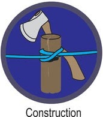
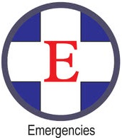
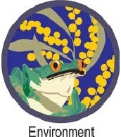
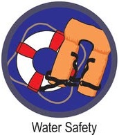
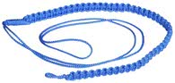

Explorer Badge - Knowlege and Skill
The are 8 Target Badges that provide the main source of program material and aim to encourage participation and develop basic skills. The first of these is the Explorer Cord.
To earn your Explorer badge you must complete the two compulsory Target badges:
And complete one of the six elective Target badges:
    Explorer Cord
To receive your Explorer Cord you must earn your Explorer badge, two Proficiency badges and one Patrol Activity badge.